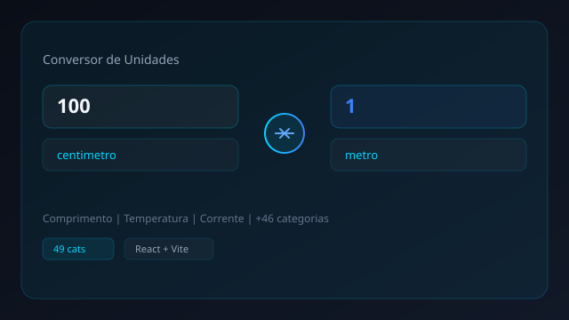
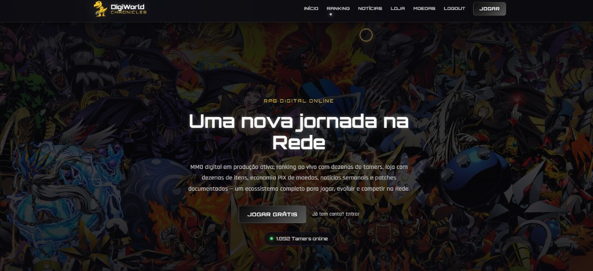

Concluído
MBA em Controladoria e Finanças
Universidade Cruzeiro do Sul
2022
> Olá, eu sou
>
Administrador, MBA em Controladoria e Finanças, com sólida trajetória em metrologia, logística e suporte técnico. Atualmente Metrologista na Fluxo Metrologia, aplicando conhecimentos em calibração e controle de instrumentos de medição.

Sou de Chapecó - SC, formado em Administração pela Universidade de Franca, com MBA em Controladoria e Finanças pela Cruzeiro do Sul, e Técnico em Automação Industrial pelo Senai. Atualmente atuo como Metrologista na Fluxo Metrologia.
Minha trajetória inclui coordenação de logística na Sandimas, suporte técnico na Crescer Sistemas, metrologia na JBS Foods e orçamentos na MR Indústria Gráfica. Busco oportunidades para contribuir com comprometimento, comunicação e foco em resultados.
Universidade Cruzeiro do Sul
2022
Universidade de Franca (UNIFRAN)
2016 — 2020
Libratek Balanças e Serviços
2014
Senai — Santo Antônio da Platina
2010 — 2012
Fluxo Metrologia
Jul, 2025 — Presente
Calibração de equipamentos conforme instruções técnicas, elaboração de relatórios de não conformidade, cadastro de instrumentos de medição e controle de calibração.
Sandimas — Chapecó, SC
Mai, 2023 — Fev, 2025
Supervisão da equipe de expedição, emissão de documentos fiscais e operacionais, notas fiscais, controle de recebimentos e conferência de cargas.
Crescer Sistemas — Chapecó, SC
Fev, 2022 — Mai, 2023
Suporte técnico aos clientes, esclarecimento de dúvidas e auxílio na resolução de problemas.
MR Indústria Gráfica — Concórdia, SC
Out, 2020 — Jun, 2021
Elaboração de orçamentos e tratativas comerciais com vendedores.
JBS Foods — Jacarezinho, PR
Dez, 2014 — Dez, 2019
Calibração de equipamentos, relatórios de não conformidade, cadastro de instrumentos de medição e controle de calibração conforme padrões de qualidade.
Site de portfólio desenvolvido com HTML, CSS e JavaScript, com design responsivo, animações e identidade visual tecnológica.

